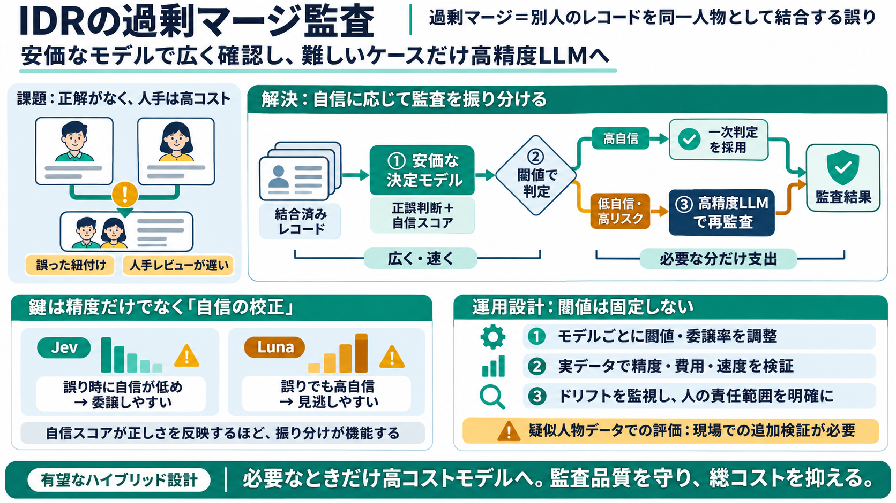

Best LLM Right Now (Oct 2026): Latest Models Ranked | Hokai
For most small teams doing coding or writing, Claude Opus 5.5 is the strongest default as of October 2026, at $4 input a…

低コストで精度を守る
ID解決（Identity Resolution / IDR）の「過剰マージ（over-merging）」を、安価な決定モデルで広くスクリーニングし、必要な分だけフロンティアLLMへ委譲することで、高精度監査に近づける——という研究報告。
人手での確認が遅い
過剰マージは「本当に同一人物か」を確かめる必要があるのに、公式な正解ラベルが存在しにくい。結果としてサンプリングの人手レビューが遅く、高コストになる。
AIが「同一人物」だと結合した複数レコード（プロファイル）
正否の最終確認が人手サンプリング依存になりがち
全部を高級品にしない
決定モデル（0/1の自信スコア）で多くを採点し、高リスク（または低自信）のケースだけフロンティアLLMへ回す。狙いは「必要なときだけ支出」して、精度を最先端に近づけること。
安価な決定モデルで採点（過剰マージの正誤/自信）
自信閾値（confidence threshold）で委譲条件を判定
必要分のみ Opus 級モデルで再確認
単体でも出発点は高い
決定モデル（例：Jev、Luna）は単体でも一定精度を示す（例：88.8〜97.3%）。ただし難しい過剰マージでは、フロンティアモデル（例：Claude Opus）が上回る。
0/1判断＋confidenceでスクリーニングに向く
難ケースの判別精度がより高い
精度より重要な癖
ハイブリッドの成否は単体精度ではなく、自信スコアの校正に左右される。Lunaは誤りでも自信を高く出しやすく、Jevは誤り時に自信が低めに出る傾向。
ミスでも高confidenceになりやすい（過信）
ミス時にconfidenceが低めになりやすい
必要分だけ委譲
JevからOpusへ順に一部を委譲すると、精度を大きく改善しつつコストを削減できる。難しいベンチマークほど差が明確になる。
決定モデルの（自信）confidence
閾値を超える/満たさないケース
高コストなフロンティアモデルで再監査
閾値は設計変数
JevとLunaでは最適な閾値が異なる。校正の癖に合わせて切り替え戦略を調整することで、「精度×コスト」を最適化できる。
confidence の分布が違うため最適閾値も変わる
固定ではなく、委譲率（送る割合）を設計する
最終提案
ハイブリッド方式は「自信に応じて支出を動的調整」する仕組みとして有望だ。精度を維持しながら、必要な範囲だけ高コスト側を使う設計になる。
校正が良いモデルほど委譲戦略が機能
高精度に近づきつつ総コストを下げる
閾値は再調整対象（calibration前提）
前提条件に注意
ベンチマークは実在人物ではなく疑似人物（pseudopeople）を用いている。モデル単価・レイテンシも実運用で変動しうるため、数値をそのまま鵜呑みにせず追加検証が必要。
表記ゆれ・欠損・住所体系などの分布差が再現されない可能性
コスト/速度は環境依存。PoCで再計測が必要
何が強いか / 何が怖いか
この報告の強みは、「高精度モデルを選ぶ」だけでなく、confidence校正という意思決定に直結する性質を中心に据えた点。特にLunaの“過信”が委譲を崩す指摘は、運用設計に示唆的。
単体精度より「委譲設計が機能するか」を見ている
実データで同様の校正・分布が保たれる保証はない
評価・責任・継続
ID解決の誤りは不適切な紐付けや不利益につながり得る。実運用では、監査頻度、エラー時の影響範囲、最終判断の責任分界を定義する必要がある。
分布ドリフト/モデル劣化
閾値管理・再評価の継続
人の最終判断が必要な領域
参照（本文に基づく）
今回の要約は、ユーザー提供の文章（研究報告の要旨＋所見）を元に再構成しています。本文中で固有の論文書誌情報が提示されていないため、一般化した参照項目のみ記載します。
For most small teams doing coding or writing, Claude Opus 5.5 is the strongest default as of October 2026, at $4 input a…
Claude Opus 5.5 leads the Artificial Analysis Coding Agent Index v1.5 at 66. Claude Fable 5.1 and GPT-6 Astra tie at 62.…
Most of the savings require someone to act. GPT-6 Luna halves Luna-tier costs and Sonnet 5.5 or GPT-6.1 Sol can replace …
パロアルト検証で判明した40％の限界 # Claude Opus 5.5、GPT-6 Sol／Luna登場 情シスが迫られるモデル使い分け 「特定モデルへの一本化」では業務要件もコストも賄えない。OpenAIやAnthropicの新モデ…
| GPT-6 Sol Pro | `openai/gpt-6-sol-pro` | 1,050,000 | $2.00 | $10.00 | Sep 22, 2026 | | Claude Haiku 5.5 | `anthropic/c…